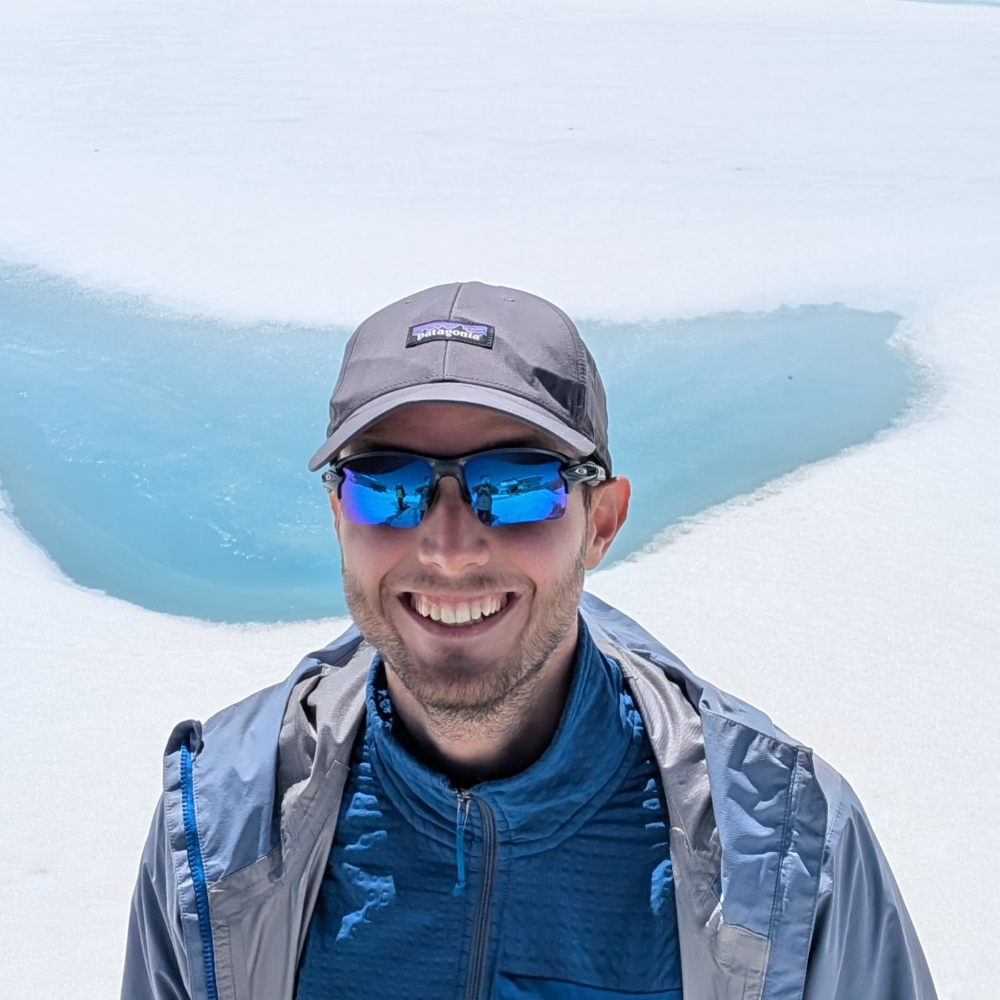

I'm a Data Engineer and Data Architect with a passion for building robust data systems on Microsoft Azure. Based near Reggio Emilia, I've spent 4+ years architecting pipelines that power decisions for enterprises across Italy.
My stack lives in the Azure ecosystem — Synapse Analytics, Data Factory, Microsoft Fabric — but my curiosity doesn't stop there. I enjoy the full journey from raw ingestion to a polished Power BI dashboard. I recently earned my Microsoft Certified: Fabric Data Engineer Associate certification.
Outside of data, I volunteer as a Scout chief, which has quietly made me a better engineer: patience, improvisation, and an obsession with leaving things better than I found them.
Azure data consultant serving enterprise clients across Italian and European markets. Architecting end-to-end data ecosystems — from raw ingestion to analytics-ready models — for clients in automotive, manufacturing and the public sector.
Joined as a part-time BI analyst during university; grew into a full-time Big Data Developer role as the company pivoted to Azure cloud consulting. Transitioned with the business unit when it was acquired by Agic Cloud in 2022.
Internship providing IT support and system maintenance. First professional exposure to enterprise technology environments.
Large-scale ELT data platform built on Azure Synapse Analytics and Data Factory. Consolidated multi-source commercial and operational data into a unified warehouse, enabling cross-departmental analytics and executive-level Power BI reporting across the client's Italian operations.
Data architecture case study →End-to-end data pipeline for a major national infrastructure operator. Python-driven ingestion, Azure Analysis Services models, and Power BI dashboards surfacing real-time station operations metrics.
View case study →Greenfield Azure Synapse data warehouse and Data Factory pipeline suite for a leading Italian professional services firm. Structured unstructured operational and compliance data into queryable models for compliance and business reporting.
View case study →